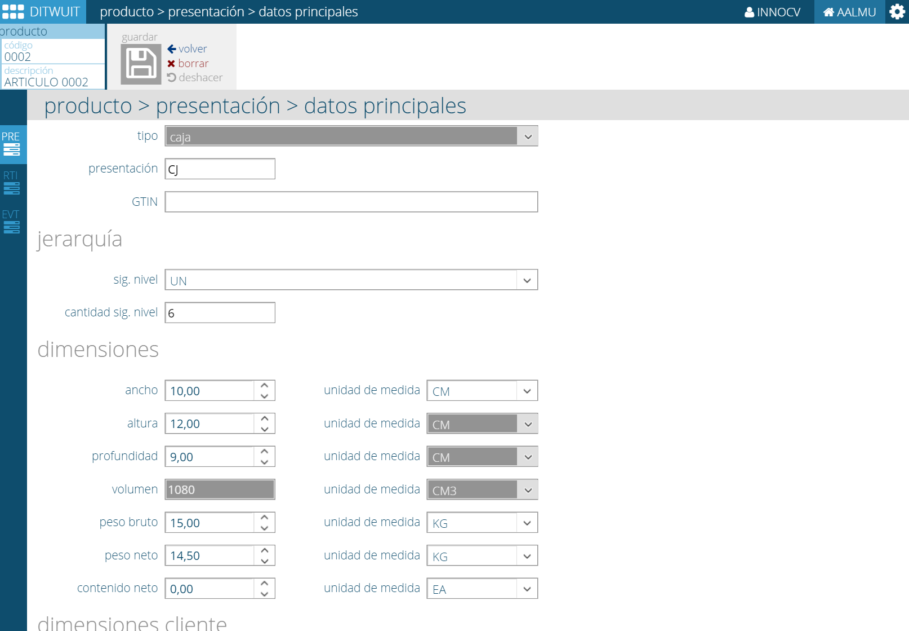

Presentaciones¶
Las presentaciones son cada una de las unidades logísticas en las que se puede manipular la mercancía en el almacén.
En la terminología extendida por GS1 podemos hablar de:
- Embalaje primario. Es aquel que está en contacto directo con el producto. Es coincidente con el envase.
- Embalaje secundario. Protege al embalaje primario y tiene como objetivo facilitar el manejo simultáneo de varias unidades en el transporte. Normalmente es descartado durante el proceso de venta aunque puede convertirse en la unidad de venta.
- Embalaje terciario. todo envase, incluidas las paletas de transporte, diseñado para facilitar la manipulación y el transporte de varias unidades de venta o de varios envases colectivos con objeto de evitar su manipulación física y los daños inherentes al transporte. El envase de transporte no abarca los contenedores normalizados navales, viarios, ferroviarios ni aéreos.
Adicionalmente, tenemos el concepto de unidad de carga que es una agrupación de embalajes secundarios o terciarios en una carga compacta de mayor tamaño (por ejemplo, un palet) para ser manejada por una sola unidad (ejemplo, una carretilla), reduciendo superficies de almacenamiento, facilitando las operaciones de manipulación y transporte del producto. Se puede interpretar como embalaje terciario.
Esta estructura queda completada mediante el uso del GTIN, el código de barras que identifica al producto. Los productos cuyo destino sea el punto de venta al detalle, es decir, las Unidades de Consumo, siempre deberán estar codificadas mediante un GTIN-13.
Las agrupaciones de producto podrán identificarse mediante un código GTIN-13 distinto al de la unidad contenida, o bien mediante un código GTIN-14, ambas opciones son correctas dentro de la Normativa GS1 de Codificación.
El GS1-128 permite completar los códigos anteriormente citados (GTIN-13 y GTIN-14) con información o características relativas al producto (número de lote, fecha de caducidad, producción, envasado,...) de una forma modular y estandarizada, mediante los Identificadores de Aplicación (IA’s).
Dentro de DITWUIT* se procede a registrar la jerarquía de toda la información del artículo. Lo habitual es asociar el **GTIN correspondiente a cada embalaje aunque ciertos clientes pueden no requerir esta gestión y optar por asociar todos los GTIN al artículo, no al embalaje.
El GTIN debe cambiarse según la norma GS1 siempre que existan:
- Cambios de atributos (tallas, colores, aromas, etc.)
- Cambio de dimensiones.
- Cambio de peso.
- En multipacks.
- En productos cuyo envase o embalaje ha cambiado físicamente.
- En productos modificados en fórmula composición, siendo dicho cambio percibido por el consumidor final.
- Añadidos que modifiquen las dimensiones.
- En variantes promocionales.
Los fabricantes identifican cada artículo con un GTIN pero los distribuidores tienen normalmente un enfoque comercial. Esto implica que, lo que para el fabricante son dos artículos (ej.: un artículo y su variante con un 25% de regalo), para el vendedor es sólo un artículo con dos presentaciones distintas. Es importante considerar esto a nivel logístico porque lleva implícito un cambio de los atributos logísticos del artículo.
Para resolver esta situación dentro de DITWUIT se hace uso de una referencia individual por artículo y todos ellos relacionados por una referencia padre. Una referencia sólo puede tener una referencia padre que obligatoriamente debe tenerse a sí misma como referencia padre.
DITWUIT está basado en el estandar GS1 y su estructura a nivel de presentaciones coincide con la estructura definida por dicha norma:
Datos Principales¶
{kind=link}
- Tipo. Define el tipo de unidad que estamos definiendo:
- Unidad base. Es la unidad mínima. En este caso no hay que indicar unidad en el siguiente nivel.
- Caja, pack o subpack. Es una unidad intermedia. Hay que definirla en relación a la unidad base.
- Palet. Unidad logística de unidad superior.
Presentación. Nombre de la presentación.
GTIN. GTIN asociado a la presentación.
Jerarquía¶
En este apartado se define la estructura de la unidad logística.
- Siguiente nivel. Indica cual es la presentación de la unidad inferior contenida en la presentación (Por ejemplo, de la caja sería la unidad).
- Número de capas. Número de capas del palet.
- Cantidad por capa. Cantidad de unidades de la presentación logística por capa.
- Cantidad siguiente nivel. A título informativo se indica el número de unidades logísticas de nivel inferior contenidas en la presentación.
Dimensiones¶
En este apartado se definen las dimensiones físicas de la presentación. Todas la información de dimensiones debe llevar asociada la unidad de medida en la que está definida (kilogramos, libras, metros, pulgadas,...)
- Ancho, altura y profundidad. Dimensiones físicas del producto.
- Volumen. Dato calculado.
- Peso Bruto.
- Peso neto.
- Peso contenido neto.
Dimensiones del cliente¶
A veces para los clientes es necesario tener almacenada una información distinta de como se tiene almacenada internamente.
{kind=link}
{kind=link}